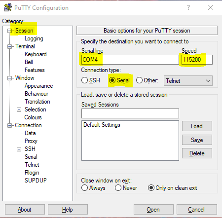

Frequently Asked Questions
Operating System Install
Test
Connect to Board Via UART
- Unplug the power cable from KRIA-SOM
- Plug in Micro USB to KRIA-SOM and the USB end to your computer
- Find the KRIA-SOM under the Ports tab on the Device Manager on Windows (Might not be COM4)
- Download Putty (Click Here!) which will allow us to connect directly to the board
- Run PuTTY, and Under COM4 Change the Highlighted sections under the sessions tab 
- Change the highlighted sections under the serial tab
- Plug back in the power cable into the KRIA-SOM
- Select open and log into the KRIA-SOM


Get IP Address of the Board
Connecting to Jupyter Notebooks
Once you have the IP address of your board, we can finally connect to it through your laptop! For this to work your board and laptop must be on the same Wifi network
- Connect your laptop to the Wifi network assigned to you and your board
- Open a web browser of your choice
- In the search bar type in the IP address of your board followed by ":9090". It will look something like this "192.168.1.5:9090"
- This will open up the login page for the Juypter notebooks. The password is xilinx
- You are now ready to start writing code!